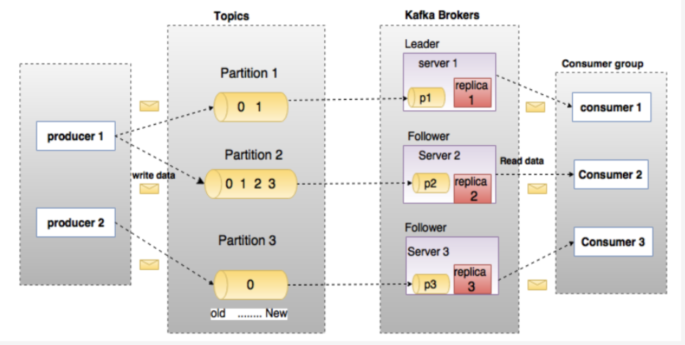
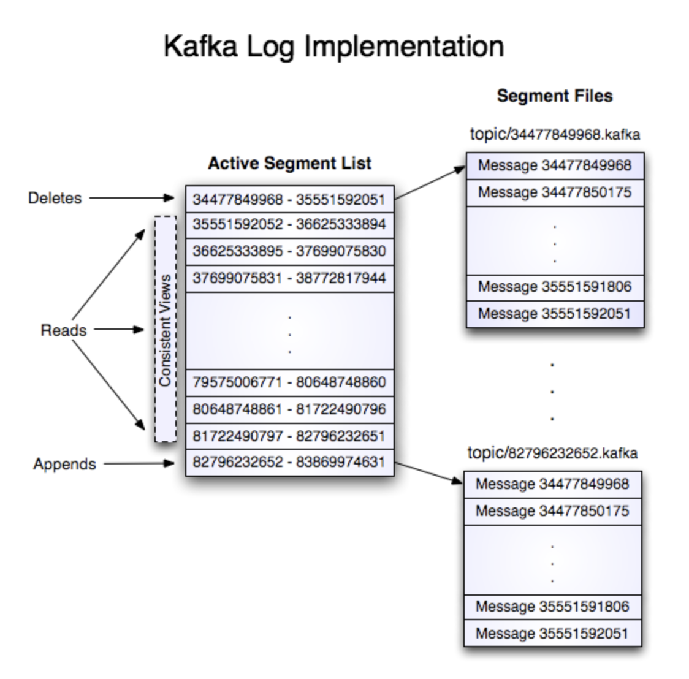
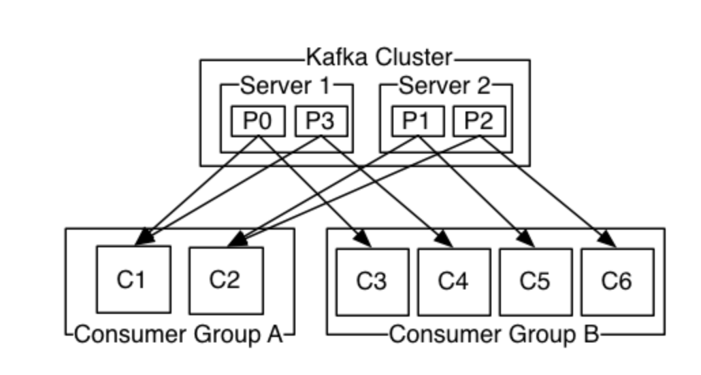
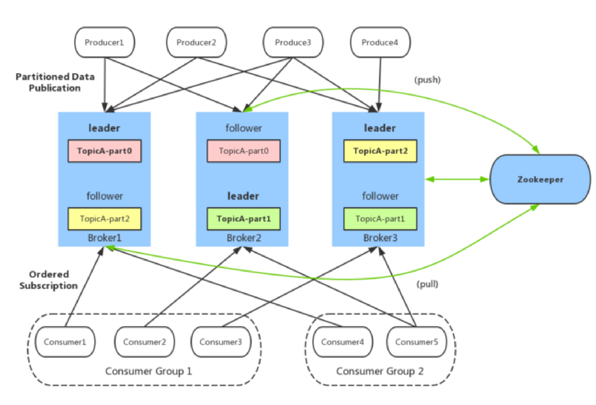
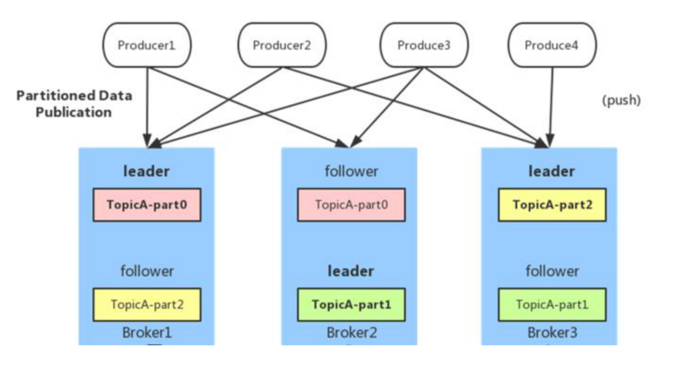
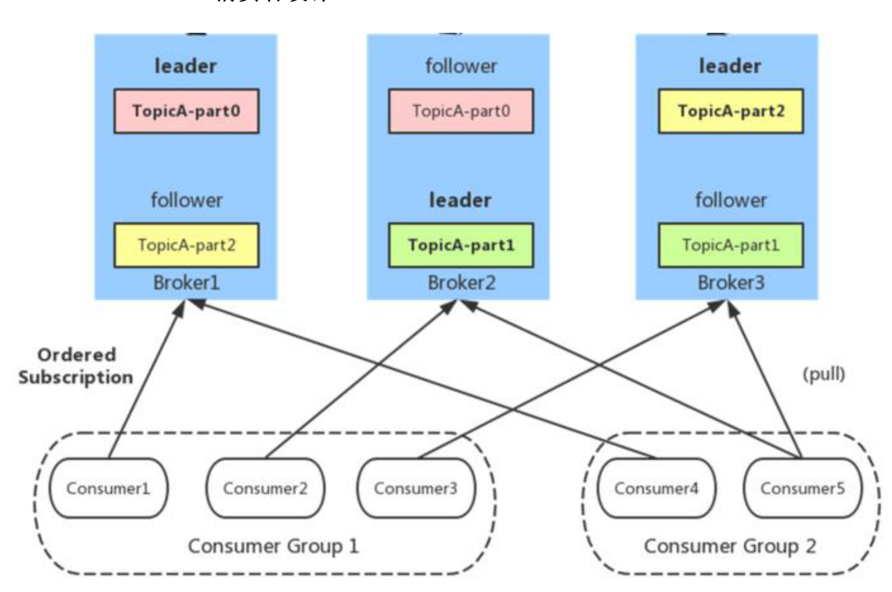

1. Kafka 概述
Kafka 是一种高吞吐量、分布式、基于发布/订阅的消息系统，最初由 LinkedIn 公司开发，使用Scala 语言编写，目前是 Apache 的开源项目。 主要应用场景是：日志收集系统和消息系统。 Kafka主要设计目标如下：
- 以时间复杂度为O(1)的方式提供消息持久化能力，即使对TB级以上数据也能保证常数时间的访问性能。
- 高吞吐率。即使在非常廉价的商用机器上也能做到单机支持每秒100K条消息的传输。
- 支持Kafka Server间的消息分区，及分布式消费，同时保证每个partition内的消息顺序传输。
- 同时支持离线数据处理和实时数据处理。
- 支持在线水平扩展
2. Kafka中的术语解释
在深入理解Kafka之前，先介绍一下Kafka中的术语。下图展示了Kafka的相关术语以及之间的关系：

上图中一个topic配置了3个partition。Partition1有两个offset：0和1。Partition2有4个offset。Partition3有1个offset。副本的id和副本所在的机器的id恰好相同。 如果一个topic的副本数为3，那么Kafka将在集群中为每个partition创建3个相同的副本。集群中的每个broker存储一个或多个partition。多个producer和consumer可同时生产和消费数据。
broker： Kafka 集群包含一个或多个服务器，服务器节点称为broker，负责消息存储和转发 broker存储topic的数据。如果某topic有N个partition，集群有N个broker，那么每个broker存储该topic的一个partition。 如果某topic有N个partition，集群有(N+M)个broker，那么其中有N个broker存储该topic的一个partition，剩下的M个broker不存储该topic的partition数据。 如果某topic有N个partition，集群中broker数目少于N个，那么一个broker存储该topic的一个或多个partition。在实际生产环境中，尽量避免这种情况的发生，这种情况容易导致Kafka集群数据不均衡。
topic： 每条发布到Kafka集群的消息都有一个类别，这个类别被称为Topic。（物理上不同Topic的消息分开存储，逻辑上一个Topic的消息虽然保存于一个或多个broker上但用户只需指定消息的Topic即可生产或消费数据而不必关心数据存于何处） 类似于数据库的表名
partition： topic中的数据分割为一个或多个partition。每个topic至少有一个partition。每个Partition在物理上对应一个文件夹，该文件夹下存储这个Partition的所有消息和索引文件。每个partition中的数据使用多个segment文件存储。partition中的数据是有序的，不同partition间的数据丢失了数据的顺序。如果topic有多个partition，消费数据时就不能保证数据的顺序。在需要严格保证消息的消费顺序的场景下，需要将partition数目设为1。

offset：
kafka的存储文件都是按照offset.kafka来命名，用offset做名字的好处是方便查找。例如你想找位于2049的位置，只要找到2048.kafka的文件即可。当然the first offset就是00000000000.kafka
Producer： 生产者即数据的发布者，该角色将消息发布到Kafka的topic中。broker接收到生产者发送的消息后，broker将该消息追加到当前用于追加数据的segment文件中。生产者发送的消息，存储到一个partition中，生产者也可以指定数据存储的partition。
Consumer：
消费者可以从broker中读取数据。消费者可以消费多个topic中的数据。
Consumer Group：
每个Consumer属于一个特定的Consumer Group（可为每个Consumer指定group name，若不指定group name则属于默认的group）。这是kafka用来实现一个topic消息的广播（发给所有的consumer）和单播（发给任意一个consumer）的手段。一个topic可以有多个CG。topic的消息会复制给consumer。如果需要实现广播，只要每个consumer有一个独立的CG就可以了。要实现单播只要所有的consumer在同一个CG。用CG还可以将consumer进行自由的分组而不需要多次发送消息到不同的topic。

Zookeeper：
保存着集群 broker、topic、partition 等 meta 数据；另外，还负责 broker 故障发现，partition leader 选举，负载均衡等功能
Leader
每个partition有多个副本，其中有且仅有一个作为Leader，Leader是当前负责数据的读写的partition。
Follower
Follower跟随Leader，所有写请求都通过Leader路由，数据变更会广播给所有Follower，Follower与Leader保持数据同步。如果Leader失效，则从Follower中选举出一个新的Leader。当Follower与Leader挂掉、卡住或者同步太慢，leader会把这个follower从“in sync replicas”（ISR）列表中删除，重新创建一个Follower。
kafka架构:

如上图所示，一个典型的Kafka集群中包含若干Producer（可以是web前端产生的Page View，或者是服务器日志，系统CPU、Memory等），若干broker（Kafka支持水平扩展，一般broker数量越多，集群吞吐率越高），若干Consumer Group，以及一个Zookeeper集群。Kafka通过Zookeeper管理集群配置，选举leader，以及在Consumer Group发生变化时进行rebalance。Producer使用push模式将消息发布到broker，Consumer使用pull模式从broker订阅并消费消息。
3. 生产者
3.1 负载均衡（partition 会均衡分布到不同 broker 上）
由于消息 topic 由多个 partition 组成，且 partition 会均衡分布到不同 broker 上，因此，为了有 效利用 broker 集群的性能，提高消息的吞吐量，producer 可以通过随机或者 hash 等方式，将消 息平均发送到多个 partition 上，以实现负载均衡。

3.2 批量发送
是提高消息吞吐量重要的方式，Producer 端可以在内存中合并多条消息后，以一次请求的方式发 送了批量的消息给 broker，从而大大减少 broker 存储消息的 IO 操作次数。但也一定程度上影响 了消息的实时性，相当于以时延代价，换取更好的吞吐量。
3.3 压缩（GZIP 或 Snappy）
Producer 端可以通过 GZIP 或 Snappy 格式对消息集合进行压缩。Producer 端进行压缩之后，在 Consumer 端需进行解压。压缩的好处就是减少传输的数据量，减轻对网络传输的压力，在对大 数据处理上，瓶颈往往体现在网络上而不是 CPU（压缩和解压会耗掉部分 CPU 资源）。
4. 消费者
4.1 Consumer Group
同一 Consumer Group 中的多个 Consumer 实例，不同时消费同一个 partition，等效于队列模 式。partition 内消息是有序的，Consumer 通过 pull 方式消费消息。Kafka 不删除已消费的消息 对于 partition，顺序读写磁盘数据，以时间复杂度 O(1)方式提供消息持久化能力。

使用Consumer high level API时，同一Topic的一条消息只能被同一个Consumer Group内的一个Consumer消费，但多个Consumer Group可同时消费这一消息。
这是Kafka用来实现一个Topic消息的广播（发给所有的Consumer）和单播（发给某一个Consumer）的手段。一个Topic可以对应多个Consumer Group。如果需要实现广播，只要每个Consumer有一个独立的Group就可以了。要实现单播只要所有的Consumer在同一个Group里。用Consumer Group还可以将Consumer进行自由的分组而不需要多次发送消息到不同的Topic。
实际上，Kafka的设计理念之一就是同时提供离线处理和实时处理。根据这一特性，可以使用Storm这种实时流处理系统对消息进行实时在线处理，同时使用Hadoop这种批处理系统进行离线处理，还可以同时将数据实时备份到另一个数据中心，只需要保证这三个操作所使用的Consumer属于不同的Consumer Group即可。
4.2 Push vs. Pull
作为一个消息系统，Kafka遵循了传统的方式，选择由Producer向broker push消息并由Consumer从broker pull消息。一些logging-centric system，比如Facebook的Scribe和Cloudera的Flume，采用push模式。事实上，push模式和pull模式各有优劣。
push模式很难适应消费速率不同的消费者，因为消息发送速率是由broker决定的。push模式的目标是尽可能以最快速度传递消息，但是这样很容易造成Consumer来不及处理消息，典型的表现就是拒绝服务以及网络拥塞。而pull模式则可以根据Consumer的消费能力以适当的速率消费消息。
对于Kafka而言，pull模式更合适。pull模式可简化broker的设计，Consumer可自主控制消费消息的速率，同时Consumer可以自己控制消费方式——即可批量消费也可逐条消费，同时还能选择不同的提交方式从而实现不同的传输语义。
关于kafka更多文章: